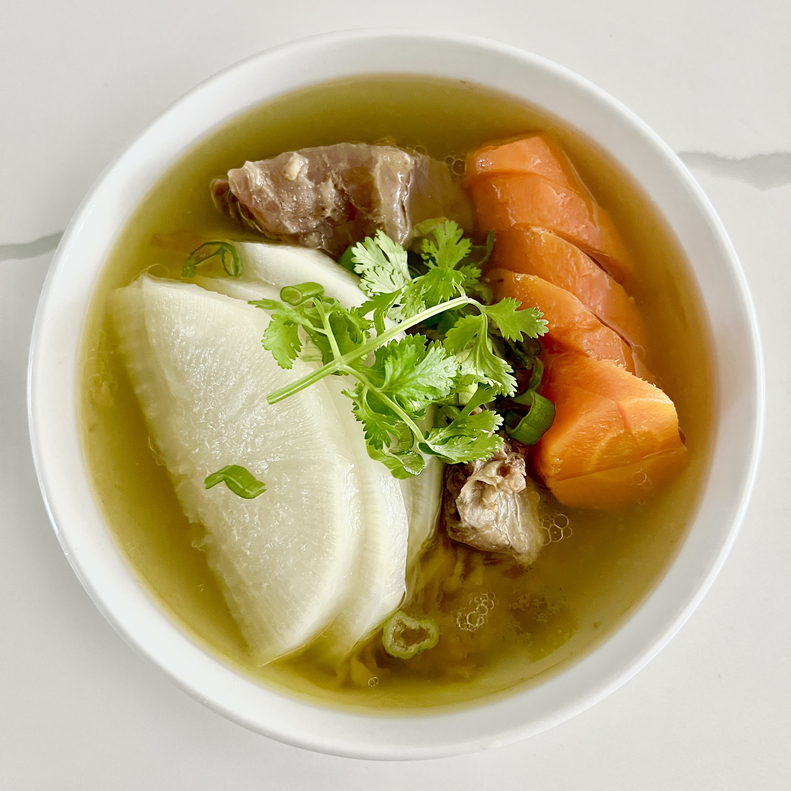

Home
Galbi-tang

Description
A life-altering soup that will instantly cure the common cold, at least for the duration of your meal.
Ingredients
- Beef short rib
- Korean radish
- Carrot [Optional]
- Green onion
- Salt
Steps
- Soak the short rib in cold water for 20 minutes to purify all the evil.
- Fill a large pot with new water and bring it to a boil.
- Once boiling, reduce heat to medium-low and add the short rib.
- Add the radish, carrot, and salt. Simmer for 30 minutes, or until the veggies are tender.
- Remove the radish and carrot from the pot, and set aside. This is prevent over-cooking of the veg.
- Continue to simmer short rib for 3-6 hours, preferably until the meat just slides off the bones.
- Once meat is cooked to perfect tender-ness, turn off heat.
- While still pipping hot, add short rib and broth to your bowl.
- Slice the previously cooked radish and carrot into smaller pieces and add to the bowl.
- Top with chopped green onion and a sprig of parsley for aesthetics effect.
- Done! Consume to feel the soup warm your very soul.